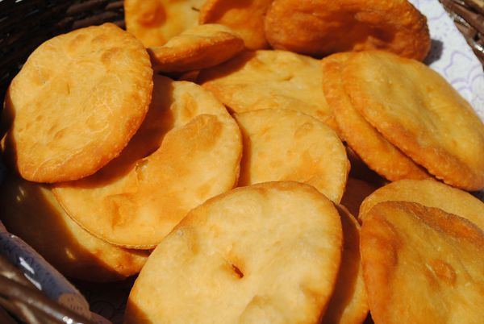
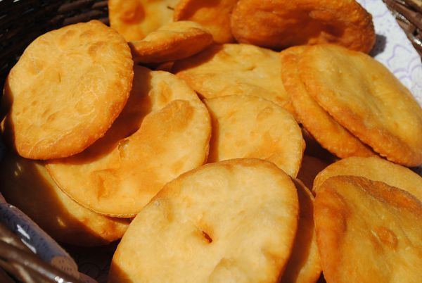
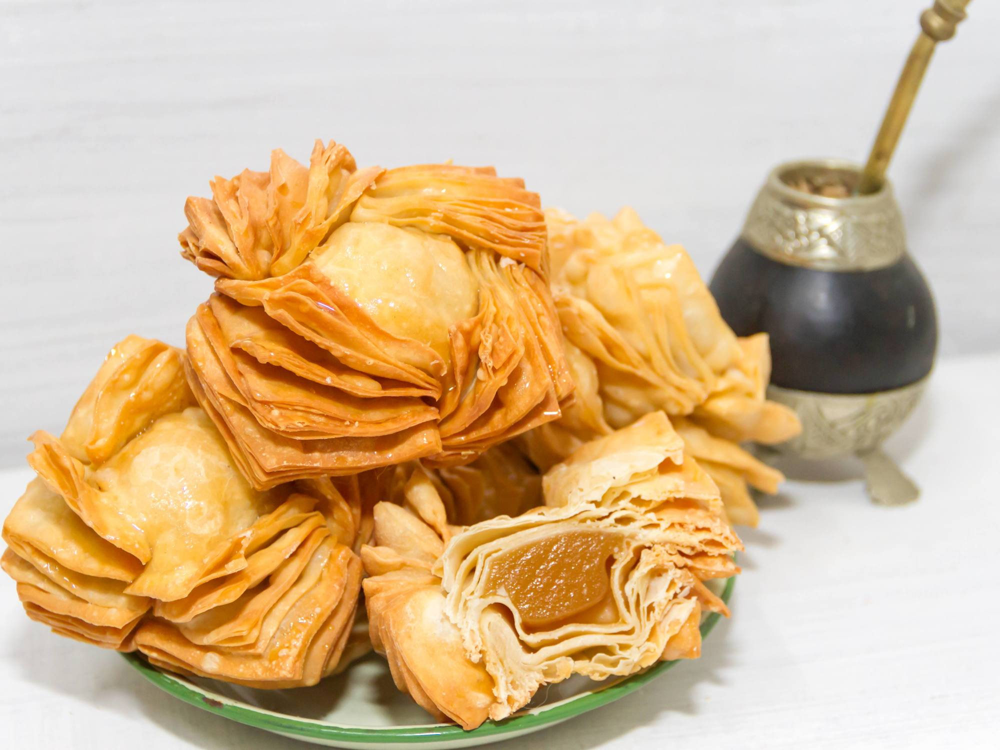
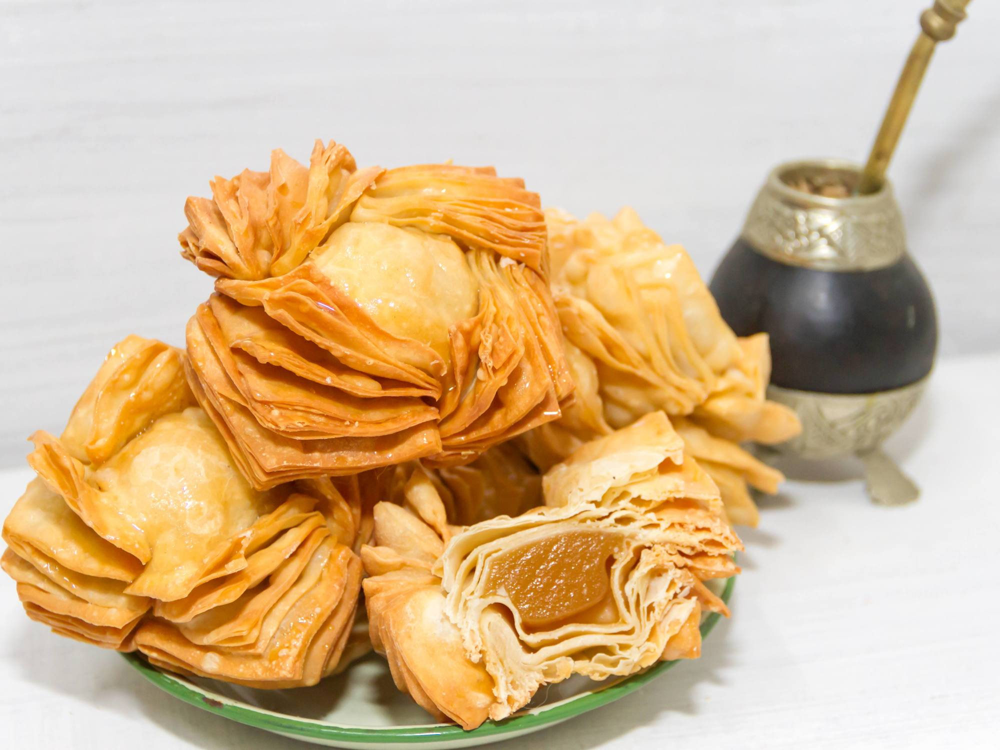

 

Listado de comidas
A continuacion les dejo el link de cada receta:
receta de pizza
- 1-Vamos a cascar los huevos y volcarlos en un recipiente junto con el azúcar y lo vamos a batir. Yo uso la batidora pero obvio que se puede hacer a tenedor alzado. Este paso se llama “cremar” la mezcla. Justamente, es batir hasta que aclare un poco el color y se vuelva espesa la mezcla y crezca.
- 2- Una vez que veamos que la mezcla aclaró y creció, vamos a agregar el aceite y a seguir batiendo. La idea es que sea un aceite neutro que no aporte un sabor demasiado fuerte a la preparación.
- 3- Agregamos unas gotitas de esencia de vainilla y seguimos batiendo y batiendo.
- 4- Una vez que está todo unido, vamos a dejar de batir y vamos a agregar la primera taza de harina junto con la cucharadita de polvo para hornear, tamizándolos con un coladorcito. Mezclamos, esta vez sí con una espátula y movimientos envolventes.
- 5- Una vez que se incorporó todo bien, agregamos al segunda taza de harina y repetimos el procedimiento de mezclado.
- Ahora viene el momento en el que nos toca evaluar cuán espesa nos quedó la mezcla (en el video se puede ver una referencia, pero igual confíen en sus criterios bizcochueleros).
- Si ven que les quedó muy espeso, pueden ir agregando chorritos de leche de a poquito hasta que la mezcla consiga la consistencia deseada. por el contrario, si ven que quedó muy líquido, se hace lo mismo pero con la harina.
- 6- Una vez que la mezcla consiguió la consistencia ideal, nos queda enmantecar y enharinar un molde y volcarla adentro sin más rodeos.
- 7- Al horno 180º por entre 40 y 50 min aproximadamente. ¡Sean pacientes! dejen el horno cerrado hasta que pasen los primeros 40 min porque sino nuestra maravillosa creación corre peligro de pincharse y no es lo que queremos.
- 8- ¡Momento de la prueba del palito! Pasados los 40 minutos, podemos abrir el horno e introducir un palillo o cuchillo dentro del bizcochuelo, si sale seco, quiere decir que está listo y es momento de sacarlo. Sepan que antes de desmoldarlo es muy conveniente dejar que se entibie, para correr menos riesgo de que se rompa. A su vez, hay que no dejar se termine de enfriar para que el calor no lo humedezca.
receta de la tortafrita
- 1.Poner en un bol la harina cernida y colocar en el centro la grasa a temperatura ambiente.
- 2.Con la punta de los dedos ir tomando la masa, agregando de a poco el agua con la sal y seguir hasta formar un bollo.
- 3.Amasarlo enérgicamente hasta que la masa forme ampollas en su superficie.
- 4.Dejar reposar durante 1 o 2 horas y luego cortar pequeñas pelotitas, achatarlas con la palma de la mano y pincharlas con un tenedor.
- 5.Freírlas enseguida en abundante aceite o grasa muy caliente, retirar con espumadera y colocar sobre papel blanco las torta fritas para que se escurran.
- 6.Espolvorearlas con azúcar molida.
receta del matambre a la pizza
- 1.Desgrasar el matambre lo más posible y ponerlo en una olla con la leche, el caldo de verduras, sal, pimienta, ají triturado y la ramita de romero. Dejar a fuego bajo por 2 horas. Este es el secreto para que el matambre a la pizza quede tierno, tan tierno que se deshace!
- 2.Picar la cebolla, el pimiento rojo y los ajos. Saltear en una sartén con aceite de oliva. Agregar la salsa de tomate. Salpimentar y condimentar con ají molido y orégano. Reservar.
- 3.Una vez que el matambre esté listo, colocar en una asadera con un poco de tuco. Poner al horno en fuego medio por 5 minutos.
- 4.Sacar del horno y agregar el resto del tuco, las fetas de jamón y el queso cremoso. Llevar a horno hasta que se derrita el queso. Agregar los dos tomates en rodajas y llevar a horno 5 minutos más.
- 5.Al sacar del horno finalizar con las aceitunas y orégano espolvoreado por encima y listo! A disfrutar mis queridos, matambre a la pizza delicioso!